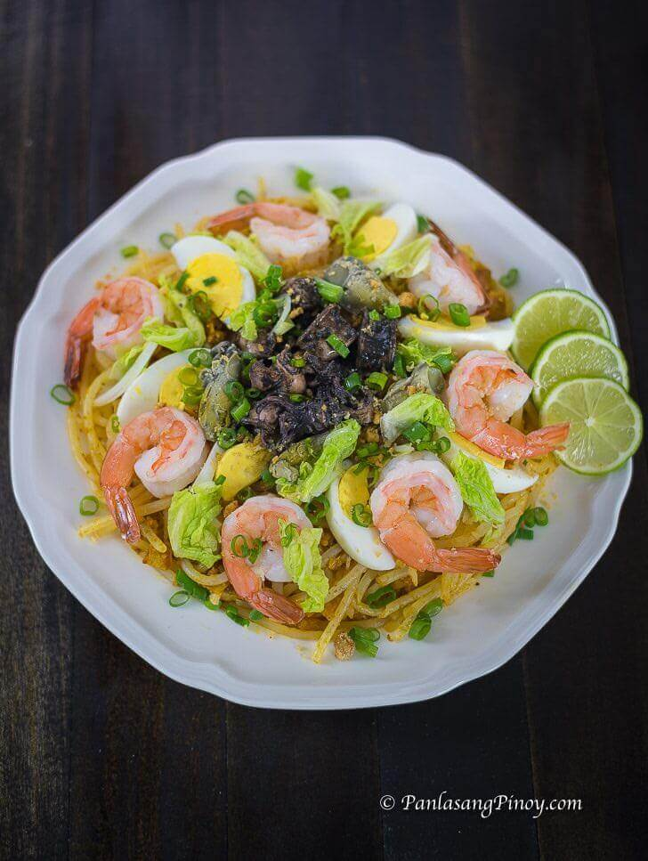

Pancit Malabon
Submitted by: Velocity
| Updated on September 28, 2026

Pancit Malabon topped with shrimps, calamansi, and egg
Pancit Malabon is the final boss of all the noodles and pancit. It's the pinaccle of what pancit should be and how it should be like. Your life as a Filipino will not be complete without tasting it and wanting for more. Hot take: this is much better than the spaghetti. Try to change my mind.
Wondering what the mystery that happens under the hood of this Pancit Malabon? Without further ado, let us find out!
Ingredients
- 1 lbs thick rice noodles
- 2 tablespoons cooking oil
- 1 tablespoon garlic (minced)
- 1 onion (medium, minced)
- 1/2 lbs pork belly (boiled and sliced into small pieces)
- 3 tablespoons fish sauce
- 1/2 teaspoon ground black pepper
- 3/4 cup shrimp juice
- 1/2 cup annatto water
- 1/4 cup chicharon (pounded)
- 1/2 lbs shrimp (shelled, cooked, and sliced in half lengthwise)
- 1/4 lbs adobong pusit (sliced)
- 3/4 cup tinapa flakes
- 1 cup napa cabbage or pechay Baguio (chopped and blanched)
- 3 hard-boiled eggs (sliced)
- 1/2 cup chicharon (pounded)
- 2 tablespoons toasted garlic
- 1 tablespoon parsley (chopped)
- 1 lemon (quartered) or calamansi
Procedure
- Prepare the noodles. Cook the thick rice noodles according to the package instructions. Traditional Pancit Malabon noodles should be soaked in water overnight before cooking. Drain them well and set aside.
- Sauté the aromatics. Heat the cooking oil in a wide pan, then add the garlic and onion. Sauté until the onion softens.
- Cook the pork. Add the boiled pork belly and continue sautéing for 3 minutes.
- Season the sauce. Add the fish sauce and ground black pepper, then stir until everything is well combined.
- Add the liquids. Pour in the shrimp juice and annatto water, then let the mixture come to a boil.
- Finish the sauce. Add 1/4 cup of pounded chicharon. Stir and simmer for 2 to 3 minutes, then turn off the heat.
- Mix the noodles and sauce. Place the cooked noodles in a large bowl. Pour the sauce over the noodles and toss until they are evenly coated.
- Add the toppings. Transfer the noodles to a wide serving platter. Arrange the shrimp, adobong pusit, tinapa flakes, cabbage, sliced eggs, remaining chicharon, toasted garlic, and parsley on top.
- Serve. Serve with lemon wedges or calamansi on the side. Share and enjoy!
The source for the Ingredients and Procedure is from Panlasang Pinoy. You can check out his, Vanjo Merano's, article as he explains the preparation for the Pork Menudo.